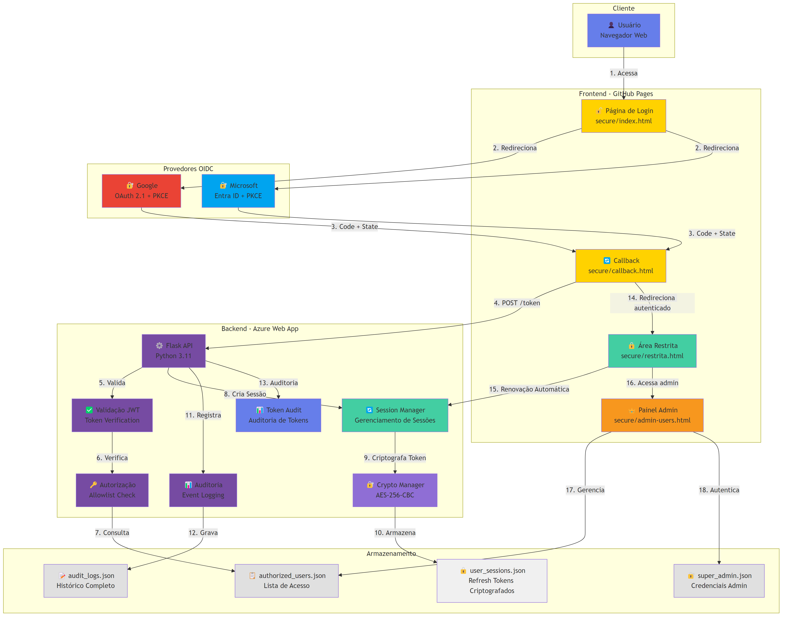

Documentação Técnica do Sistema de Autenticação OAuth 2.1 + OIDC
O CaraCore Área 51 é uma plataforma completa de autenticação e autorização que implementa os padrões mais modernos de segurança: OAuth 2.1 e OpenID Connect (OIDC).
Características Principais:
Status: Em Produção | Uptime: 99.9% | Resposta: < 200ms
Desenvolvido com foco em segurança, performance e escalabilidade, o sistema oferece uma experiência de autenticação moderna e confiável, adequada para aplicações enterprise que exigem os mais altos padrões de proteção de dados e conformidade (incluindo LGPD).
A arquitetura é dividida em dois componentes principais:

Diagrama de Arquitetura da Área 51 - Sistema OAuth 2.1 + OIDC com Refresh Tokens
A segurança é o pilar deste projeto. As seguintes medidas foram implementadas:
Taxa de Sucesso nos Testes
Total de Testes Automatizados
Fases Concluídas
Endpoints Protegidos
Conformidade LGPD
API Documentada (Swagger)
Detecção Automática de Provedor
Renovação Automática de Tokens
Criptografia AES-256-CBC
Sessões Persistentes
O deploy é realizado em duas partes: